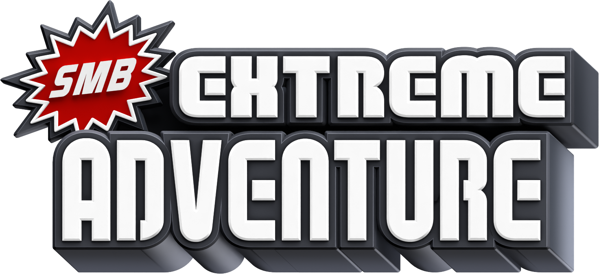
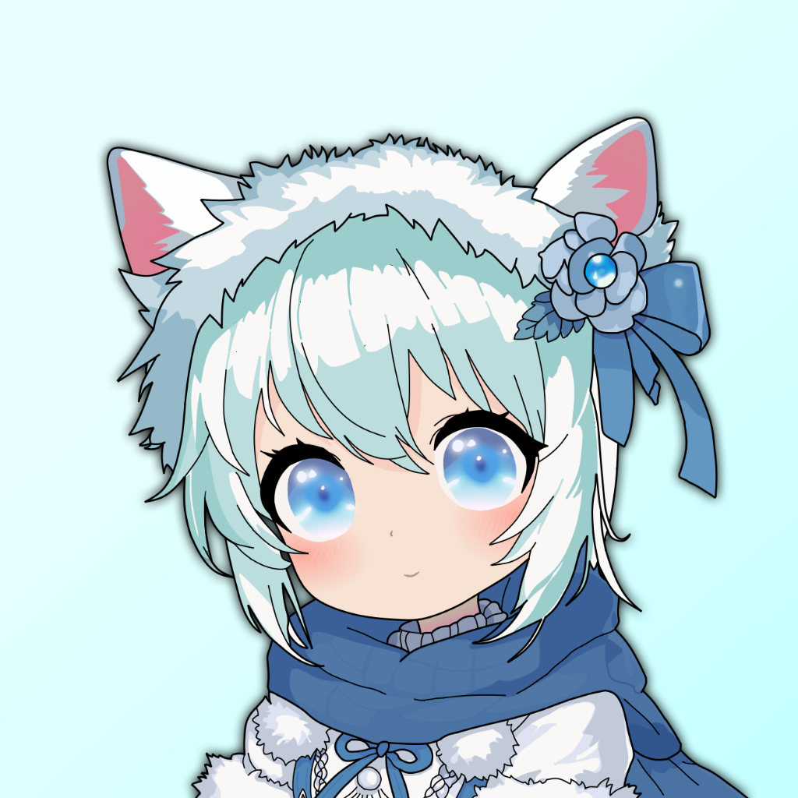
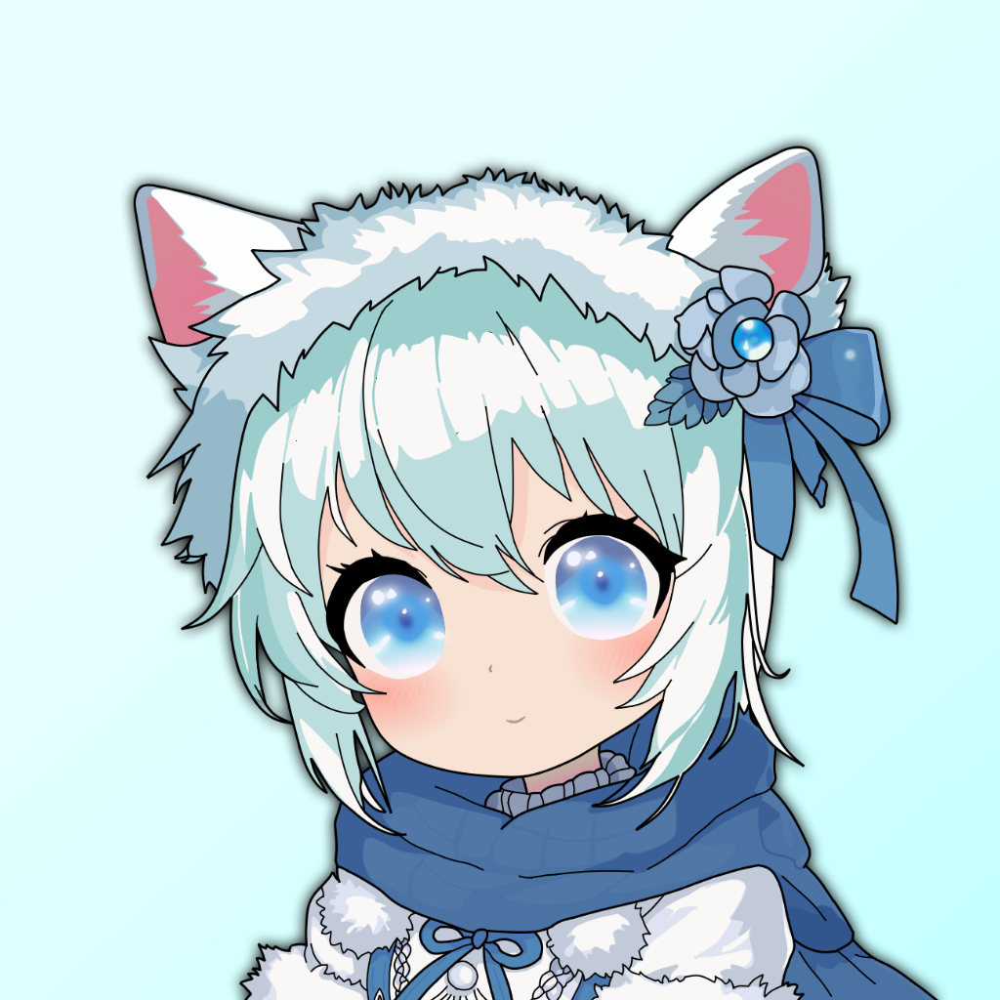

Developers
Mone: World 3 Maker, Code Compiler, Wed Developer and Custom Music Importer
Lavrenzy: World 1 and 2 Maker, Russian Game Translation (FULL VERSION), Cutscene Director and SFX Recorder
Synel: Game Features and Sprite Programmer
Wakanameko: Japanese Game Translation (FULL VERSION) and Boss Programmer (FULL VERSION)
Jacopo Plays: Beta Tester and Layout Designer
G4L (OLD) Model Importer
Bafio: Cutscene Maker

 



Author: The Team Alternative
teamalternative.info@gmail.com